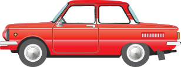
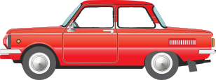
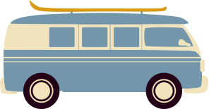
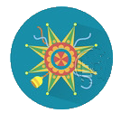
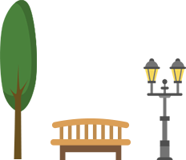
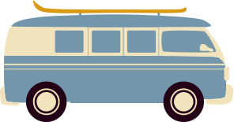
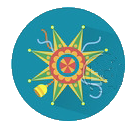
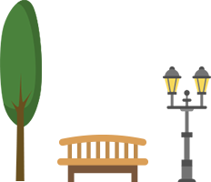

УКРАЇНА
НЕБОКРАЙ
Ми всі знайомі з відомих пам'яток України, але я тримаю парі, що ви не знали ці факти!
Український гімн складається всього з шести рядків, а не чотирьох куплетів і двох приспівів.
Яка найглибша станція метро в світі?
Яка різдвяна українська народна пісня отримала всесвітню популярність?
 

Цирк
Дніпропетровськ
Дніпропетровський державний цирк знаменитий унікальним будинком, аналога якого немає у всьому світі. Серед переваг Дніпропетровського цирку — оригінальні купольні креплення.
Такий купол дає можливість зручно кріпити підвіску спорядження артиста і створює відмінну акустику.
для вдихання диму тліючого тютюну чи інших речовин.
символ влади у деяких країнах, один з козацьких клейнодів.
Батьківщина
Мати
Київ
В народі скульптуру («пам'ятник Перемоги») нарекли «Вікторією Петрівною», чим водночас обігрувалося два поняття — латинське за походження слово «Victoria» (Перемога) та ім'я, по батькові дружини генерального секретаря КПРС Леоніда Брежнєва (Вікторія Петрівна Брежнєва, або як він її звав у своїх офіційних мемуарах — «Віка»).
у вигляді відвареного прісного тіста і начинки з картоплі, м'яса, грибів, овочів, фруктів, ягід та сиру.

Воронцовський
маяк
Одеса
Біла башта, що стоїть в середині затоки, білі рятівні кола, білі й чорні захисні ланцюги, яскраво-мідний дзвін, круті кам'яні сходи до самої води, нічний червоний вогонь — все це створювало навколо маяка своєрідний ореол романтики, що надовго запам'ятався одеситам різних поколінь.
Свято-Благовіщенський
собор
Харкiв
Перша церква в ім'я Благовіщення Пресвятої Богородиці заснована близько 1655 р., одночасно з Миколаївською та Різдвяною.
Дерев'яний однопрестольний храм Залопанського приходу був виконаний у традиційних українських трикупольних формах з окремою дерев'яною рубаною дзвіницею і обнесений тином замість огорожі.
За даними історика Сергія Трубчанінова, в Україні було понад 5000 пам'яток фортифікації.
Оперний театр
Львів
Міський театр став однією з найвизначніших споруд Львова, збудованих наприкінці періоду, який в історії архітектури характеризується як «історизм», або «еклектика».
Стилістично споруда відноситься до неоренесансу та необароко. Присутні також елементи модерну. Застосовано велику кількість форм обидвох стилів та рясне скульптурне декорування.
 
Коля́дки — величальні календарно-обрядові пісні зимового циклу свят, які походять з глибокої давнини.


Коля́дки — величальні календарно-обрядові пісні зимового циклу свят, які походять з глибокої давнини.


національний
університет
Чернівці
Заснований 4 жовтня 1875 року, указом імператора Австро-Угорщини Франца Йосифа, на основі теологічного інституту, що існував із 1827 року з німецькою викладовою мовою та з окремими кафедрами української та румунської мов і літератур.

Матеріал — лико лози, липи, в'яза.
запорізька
Січ
Запоріжжя
Існував у запорожців цікавий звичай. Їх курені були завжди відкриті. Мандрівник чи перехожий може зайти туди, погостювати, попоїсти і рушити далі в дорогу.
Основним заняттям козаків була військова справа: охорона і патрулювання торгових шляхів, морські рейди на чайках проти турецького флоту в Криму та Чорному морі
Україна
Державний устрій
Загальна площа України становить 603 628 км², вона становить 5,7% території Європи і 0,44% території світу.
У рельєфі України переважають рівнини (95% від усієї площі), що належать до південно-західної окраїни Східноєвропейської рівнини.
В Україні, яка є унітарною державою, існує єдиний вид територіального устрою: адміністративно-територіальний устрій (поділ).